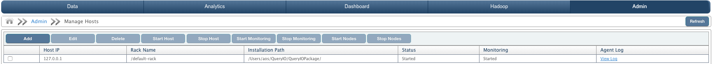
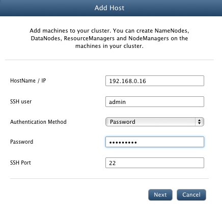
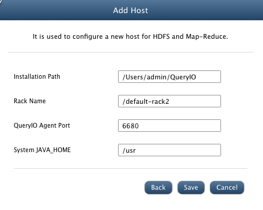

Manage Hosts
In this chapter
Host can be a local or remote machine which will be used to install several QueryIO components.
What is Host
Host will be the part of HDFS cluster
and NameNode, DataNode, ResourceManager,NodeManager can be installed on it. By default, a QueryIO package is installed on every host.

Host Summary
Displays details about registered host.
- Host IP: IP address of the host machine.
- Rack Name: Name of the rack in which host is present.
- Installation Path: Location where QueryIO package is installed on host machine.
- Status: Current state of the host machine as Started, Stopped or Not Responding
- Monitoring: Current monitoring state of the host machine as Started, Stopped or Not Responding
- Agent Log: Click on View Log to view host machine log file.
Add New Host
To manage hosts on your cluster, go to Admin > Manage Hosts.
- Click Add to add new host to the cluster.
- HostName/IP: IP address or name of the host to be added.
- SSH User: Username of the host.
- Authentication Method: Select authentication method from password or private key.
- Password or Private Key: Password or private key for account whose username was provided.
- SSH Port: Port on which SSH service is running on target host machine.

- Installation Path: Installation directory where QueryIO agent will be installed.
- Rack Name: Name of the rack in which host is present.
- QueryIO Agent Port: Agent port on which host will work.
- System JAVA-HOME: Path to directory where java is installed on system.
- Click on Add button to add node. If node is reachable and all credentials are correct, then host will be added to cluster.

Edit Host
You can update rack name for the host. To edit a host, select the check box against the host and click on Edit button.
Delete Host
To delete a host, you need to provide valid SSH username and password for the host machine.
Start Host
To start a Stopped or Not Responding host, you need to provide valid SSH username and password for the host machine.
Stop Host
To stop a Started host, you need to provide valid SSH username and password for the host machine.
Start/Stop Monitoring
JMX monitoring takes place which checks Host's status. To start or stop Host Monitoring, select the check box against the host and click on Start Monitoring or Stop Monitoring button respectively.
Start Nodes
To Start All Nodes with a Single Click,it will provide the status(Started, Not Responding, Failed) of each node configured after Start Operation performed.
Stop Nodes
To Stop All Nodes with a Single Click it will provide the status(Started, Not Responding, Failed) of each node configured after Stop Operation performed.
Copyright © 2015 QueryIO Corporation. All Rights Reserved.
QueryIO, "Big Data Intelligence" and the QueryIO Logo are trademarks
of QueryIO Corporation. Apache, Hadoop and HDFS are trademarks of The Apache Software Foundation.